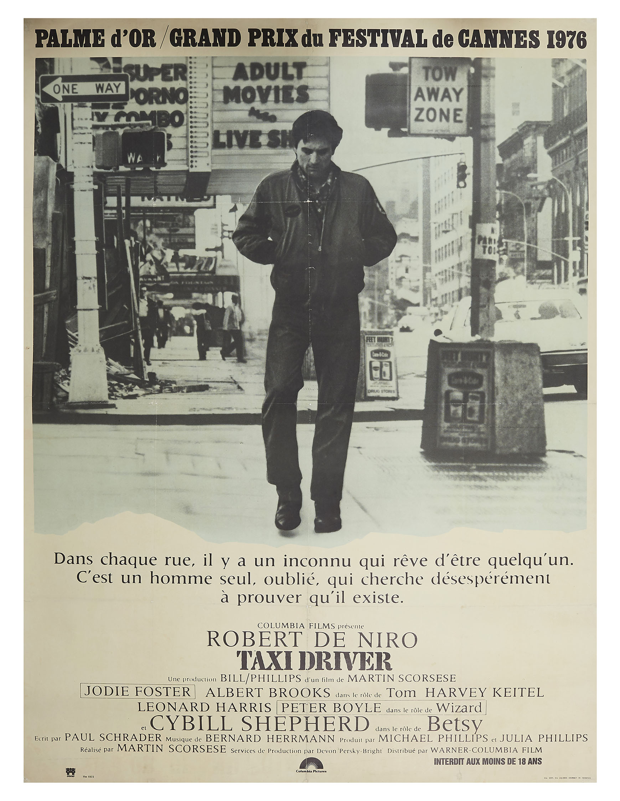

Biographie
Martin Scorsese est un réalisateur, acteur, scénariste et producteur de cinéma italo-américain né le 17 novembre 1942 à New York. De parents d'origine sicilienne, il passe son enfance dans le quartier new-yorkais de Little Italy qui lui inspire de nombreux films. Il obtient la Palme d'or au Festival de Cannes 1976 pour Taxi Driver, le Prix de la mise en scène aussi à Cannes, en 1986, pour After Hours, le Lion d'argent à la Mostra de Venise 1990 pour Les Affranchis. Il est président du jury au Festival de Cannes 1998. Après six nominations, Scorsese remporte, en 2007, pour Les Infiltrés (The Departed), trois Oscars: Oscar de la meilleure réalisation, meilleur film et meilleure adaptation. Il est récipiendaire de l'AFI Life Achievement Award pour sa contribution au cinéma. Il est le fondateur de la World Cinema Foundation et le président de la Film Foundation, une organisation à but non lucratif dédiée à la préservation du patrimoine cinématographique et à la prévention contre la décomposition des pellicules de films en stock.
Les 3 plus grands films
- La Dernière Tentation du Christ bande d'annonce
- Le loup de Wall Street Bande d'annonce
- Les Affranchis Bande d'annonce
Un conflit intérieur déchire Jésus, un jeune charpentier. Il s'isole dans le désert et revient convaincu d'être le fils de Dieu. Il prêche l'amour, mais son influence est si grande qu'il est condamné par les Romains à mourir crucifié, après avoir été tenté par Marie-Madeleine.

Sa licence de courtier en poche, et les narines déjà pleines de cocaïne, Jordan Belfort est prêt à conquérir Wall Street. Ce jour d'octobre, un krach, le plus important depuis 1929, vient piétiner ses rêves de grandeur. C'est finalement à Long Island qu'il échoue et qu'il monte sa propre affaire de courtage. Son créneau : le hors-cote. Sa méthode : l'arnaque. Son équipe : des vendeurs ou des petits trafiquants.

Dans les années 1950, à Brooklyn, le jeune Henry Hill a l'occasion de réaliser son rêve : devenir gangster lorsqu'un caïd local l'intègre à son équipe. C'est alors qu'il rencontre James et Tommy, 2 truands d'une rare brutalité. Impressionné, Henry s'associe avec eux pour débuter un trafic très lucratif. Lorsqu'il séduit la ravissante Karen, le jeune mafieux s'imagine que plus rien ni personne ne pourra jamais lui résister.
Film coup de coeur
 Bande d'annonceTravis Bickle, un jeune homme du Midwest et ancien marine, est chauffeur de taxi de nuit à New York. Insomniaque et solitaire, il rencontre Betsy, une assistante du sénateur Charles Palantine, candidat à la présidentielle, mais elle le repousse après qu'il l'a emmenée voir un film pornographique. Confronté à la violence et à la perversion de la nuit new-yorkaise, il achète des armes au marché noir et s'entraîne à les manier.